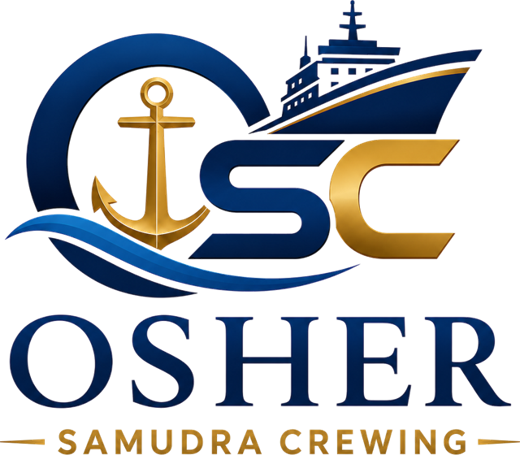
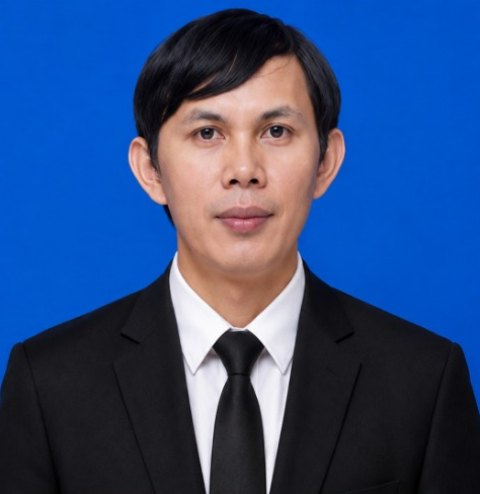
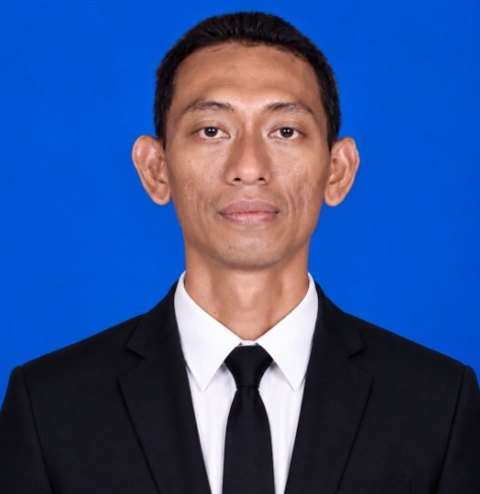

PT Osher Samudra Crewing (OSC) menempatkan awak kapal dan tenaga kerja untuk pemilik dan operator kapal. Kami membangun SDM maritim dengan visi jangka panjang, konsistensi, dan kemitraan yang dapat dipercaya.

Kami menghubungkan pemilik kapal dengan awak dan tenaga kerja yang siap bekerja, dari Balikpapan ke perairan Indonesia.
Rekrutmen dan penempatan crew dek, mesin, dan kru pendukung sesuai kebutuhan armada dan jenis kapal Anda.
KBLI 78104Penyediaan tenaga kerja untuk usaha di dalam negeri, terutama sektor maritim, pelabuhan, dan industri pendukungnya.
KBLI 78101Kami memandang crew sebagai aset jangka panjang: seleksi yang cermat, pembinaan, dan hubungan kerja yang berkelanjutan.
Komitmen kemitraanOSC dipimpin langsung oleh pendirinya bersama manajemen yang menangani operasional sehari-hari.

Memimpin arah usaha OSC dan grup perusahaannya di Balikpapan.

Mengelola operasional dan penempatan crew OSC.
Setiap informasi OSC mengalir dan saling bertaut: video lengkap tayang di YouTube, potongannya menjadi Reels di Instagram, dibagikan ke Facebook, dan semuanya kembali terkumpul di website ini.
Video utuh: profil perusahaan, edukasi maritim, dan kegiatan crew.
Reels singkat dari video yang sama, dengan tautan kembali ke video penuh.
Reels dan postingan dibagikan ulang untuk menjangkau pemilik kapal dan komunitas.
Semua kanal tampil otomatis di osc-crew.com, lengkap dengan informasi kemitraan.
OSC berjalan bersama dua perusahaan saudara di Balikpapan, membuka peluang kemitraan dan joint venture di sektor maritim, konstruksi, dan infrastruktur.
Pelaut dan pencari kerja: kirimkan CV beserta sertifikat Anda ke alamat di bawah. Pemilik kapal, operator, dan investor: hubungi kami lewat kanal resmi di samping.
recruitment@osc-crew.comPT Osher Samudra Crewing
Balikpapan, Kalimantan Timur